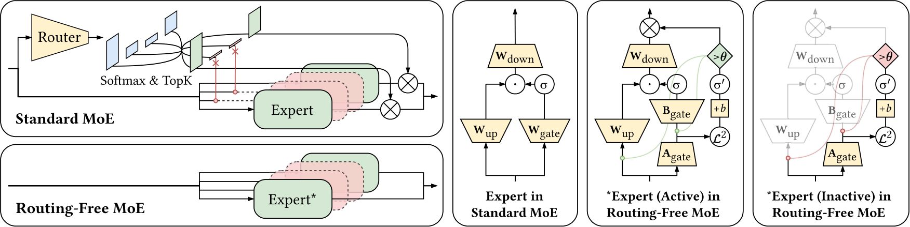
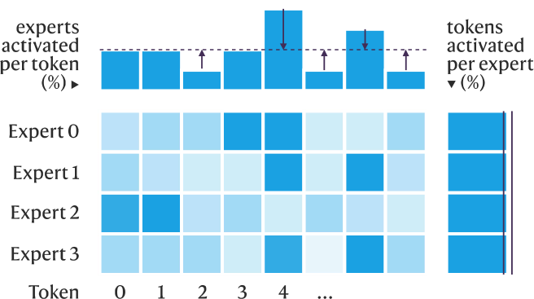
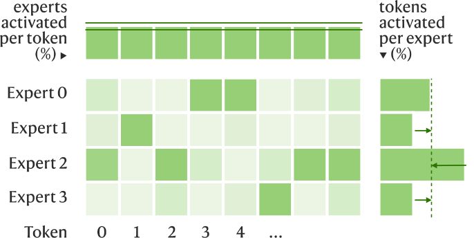
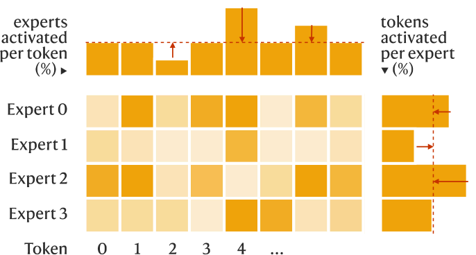
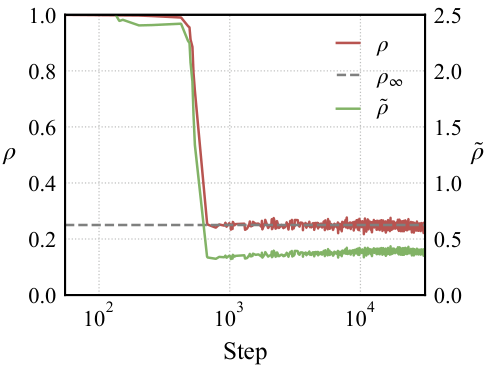
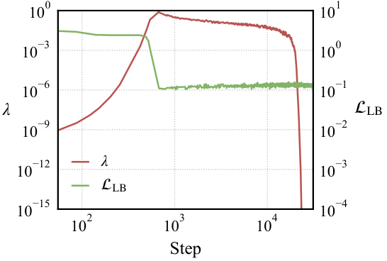
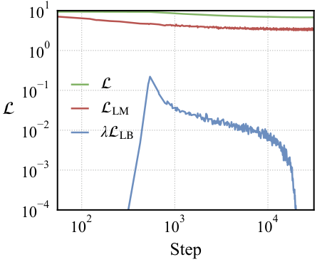
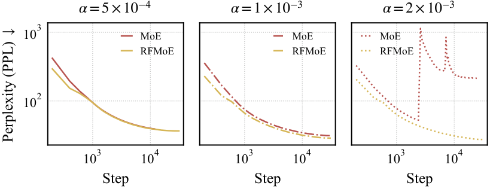
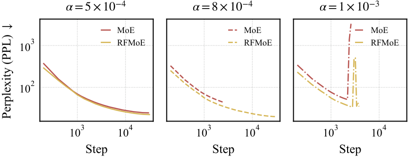
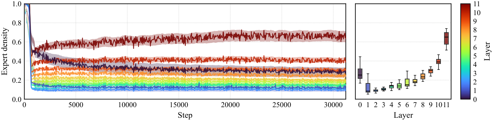

Routing-Free Mixture-of-Experts
1LMU Munich 2UCLA 3MCML ✦Equal contribution
yilun.liu@tum.de jinruhan1219@ucla.edu cognitive.yunpu@gmail.com
Standard MoE treats expert allocation as a top-down classification, where a small external router scores experts, Softmax normalizes the score distribution, and TopK hard-codes a uniform activation pattern. Rigidly adhering to this pipeline constrains the model's ability to discover potentially better resouce allocation strategies. Routing-Free MoE eliminates any centralized modules and encapsulates all functionalities into bottom-up decisions made inside individual experts, which can be directly optimized through continuous gradient flow.
Each expert scores itself from a low-rank internal gate representation and activates itself when confidence exceeds a learnable threshold.
ReLU-threshold gating replaces Softmax and TopK, restoring continuous gradient flow and input-adaptive sparsity levels.
A single auxiliary loss interpolates token-balancing and expert-balancing, with dynamic adaptation that tracks target density.

Architecture overview. Standard MoE relies on routing to orchestrate expert activations. Routing-Free MoE lets each expert independently determine its own activation. Green indicates activated components; red indicates inactive ones; yellow indicates trainable ones.
Routing-Free MoE consistently outperforms standard MoE, AoE, and ReMoE in language modeling. All models are trained from scratch on OpenWebText under identical environment conditions and best-performing configurations. FLOPs are estimated for one epoch.
Downstream evaluation results for baselines and Routing-Free MoE across scales and benchmarks. Each panel compares standard MoE, AoE, ReMoE, and RFMoE trained on OpenWebText from scratch for one epoch under identical compute settings. Bar plots show the averaged accuracy across all nine benchmarks and five representative ones.
Existing strategies employ rigid balancing targets that force predetermined activation patterns among tokens and experts, which often exhibit varying performance under different configurations. Routing-Free MoE adopts a dynamic, configurable framework that adaptively achieves the sparsity and load-balancing objectives during training. We seamlessly interpolate both token and expert balancing, allowing the optimal activation pattern to emerge spontaneously depending on training dynamics and workload requirements.



During training, Routing-Free MoE interpolates token and expert balancing, allowing customizable control over which objective dominates as the model approaches the target activation ratio. During inference, the learned threshold can be further adjusted globally to allow slightly less or more experts to activate. This provides a way to balance output quality and computation effort, with assurance that moderate perturbations will not drastically disrupt the model's capabilities.
Routing-Free MoE adopts an adaptive schedule for load-balancing regularization to drive the activation ratio towards desired target throughout training. This is compatible with both training from scratch and adaptation of pretrained MoE into Routing-Free MoE, and allows more experts to be activated during the early warm-up to jointly explore the representation space, establish initial specialization, and avoid expert redundancy. As a result, Routing-Free MoE not only outperforms the standard MoE, but also exhibits better training stability and less sensitivity to learning rates, tolerating a wider range of hyperparameter choices at scale.





Under deployment with expert parallelism, where experts are distributed across multiple devices, standard MoE's centralized routing forces blocking communication and causes severe throughput drops. Routing-Free MoE's decentralized architecture natively supports non-blocking, asynchronous processing, delivering 1.19× higher prefill throughput and 1.12× higher decode throughput.
Prefill throughput per device under expert parallelism. Prefill process T = 1,024 tokens in a single forward pass. All runs use batch size 1 with input tokens sampled randomly from OpenWebText, bfloat16 precision, and report the mean over 10 repetitions after 3 warmup ones.
Autoregressive decode throughput per device under expert parallelism. Decode generates 128 tokens autoregressively with T = 1 per step. All runs use batch size 1 with input tokens sampled randomly from OpenWebText, bfloat16 precision, and report the mean over 10 repetitions after 3 warmup steps.
With TopK at each layer eliminated, a natural question is whether the activation ratio across layers should still be enforced to be the same. Relaxing to a global density target ρ∞ allows Routing-Free MoE to develop a more effective, functionally aligned activation structure by itself, where compute-intensive layers activate more experts, leading to a significant improvement.

Evolution of expert activation across layers during training under global density target. Left panel shows the per-layer mean activation as lines, along with IQR as shaded band regions using 1,000-step moving average smoothing. Right panel shows activation distribution at the final training step. Model at scale S trained on OpenWebText for one epoch.
We would be delighted if you find Routing-Free MoE helpful in your own research and development, and could consider citing our paper! 🥰
@misc{liu2026routingfreemixtureofexperts,
title={Routing-Free Mixture-of-Experts},
author={Yilun Liu and Jinru Han and Sikuan Yan and Volker Tresp and Yunpu Ma},
year={2026},
eprint={2604.00801},
archivePrefix={arXiv},
primaryClass={cs.LG},
url={https://arxiv.org/abs/2604.00801},
}